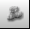

Content of this section:

 cfdmsh 4.0 documentation
cfdmsh 4.0 documentation cfdmsh 4.0 documentation


Content of this section:
Click on  in the toolbar
in the toolbar
Select "Glue_4" → Inspection > Get Non Blocks → Apply and Close
Select "Glue_4" → Type in the Python console:
PutAllSubShapesInAGroup( 2 )
or:
passiag( 2 )
Select "AllSubShapes (Faces)" → New Entity > Group > Cut Group →
Set the "Name" to "quad" → Set "Tool Groups" to "NonBlocksGroup_2" (being the 2D "non-block" group) → Apply and Close
Click on  in the toolbar
Select "Mesh_1" → Mesh > Create Sub-mesh → Select "quad" →
Set "Algorithm" to "Quadrangle (Mapping)" → Apply and Close
Select "Mesh_1" → Mesh > Compute → Close
Select "Mesh_1" → Right-click in the 3D window > Display Mode > Shading
Click on  in the toolbar
in the toolbar
Select "Glue_4" → Type in the Python console:
GetTriEdgeFaces( )
or:
gtef( )
Click on in the toolbar
Select all "TriEdgeFace_*" face groups + "Mesh_1" → Type in the Python console:
MakeTriEdgeFaceSubmeshes( )
or:
mtefs( )
Select "Mesh_1" → Mesh > Compute → Close
Select "Mesh_1" → Mesh > Create Sub-mesh → Select "tip_source" →
Set "Algorithm" to "Netgen 2D" →
Click on  beside "Hypothesis" > NETGEN 2D Parameters →
beside "Hypothesis" > NETGEN 2D Parameters →
OK → Apply and Close
Select "Mesh_1" → Mesh > Compute → Close
Select "Mesh_1" → Mesh > Create Sub-mesh → Select "tip_target" →
Set "Algorithm" to "Projection 2D" →
Click on  beside "Hypothesis" > Source Face →
beside "Hypothesis" > Source Face →
Set "Source Face" to "tip_source" →
Set "Source Mesh" to "Mesh_1" →
OK → Apply and Close
Select "Mesh_1" → Mesh > Compute → Close
Click on  in the toolbar
in the toolbar
Select "Glue_4" → Type in the Python console:
PutAllSubShapesInAGroup( 3 )
or:
passiag( 3 )
Select "AllSubShapes (Solids)" → New Entity > Group > Cut Group →
Set the "Name" to "hexa" → Set "Tool Groups" to "NonBlocksGroup_1" ( being the 3D "non-block" group) → Apply and Close
Click on in the toolbar
Select "Mesh_1" → Mesh > Create Sub-mesh → Select "hexa" →
Set "Algorithm" to "Hexahedron (i,j,k)" → Apply and Close
Select "Mesh_1" → Mesh > Create Sub-mesh → Select "prisms" →
Set "Algorithm" to "3D Extrusion" → Apply and Close → No
Select "Mesh_1" → Mesh > Compute → Close
Select "Sub-mesh_14" → Right-click > Show Only
Select "Sub-mesh_14" → Right-click in the 3D window > Display Mode > Wireframe
Select "Mesh_1" → Right-click > Show Only
Select "Mesh_1" → Right-click in the 3D window > Display Mode > Shading
Select "Mesh_1" → Right-click in the 3D window > Display Entity > (disable) Face
Select "Mesh_1" → Right-click in the 3D window > Display Entity > (enable) Volumes
You can close this study.
END OF THIS TUTORIAL
cfdmsh 4.0 documentation
tougeron-cfd.com © 2016